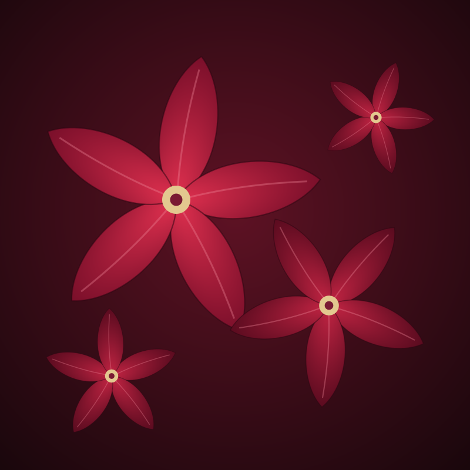
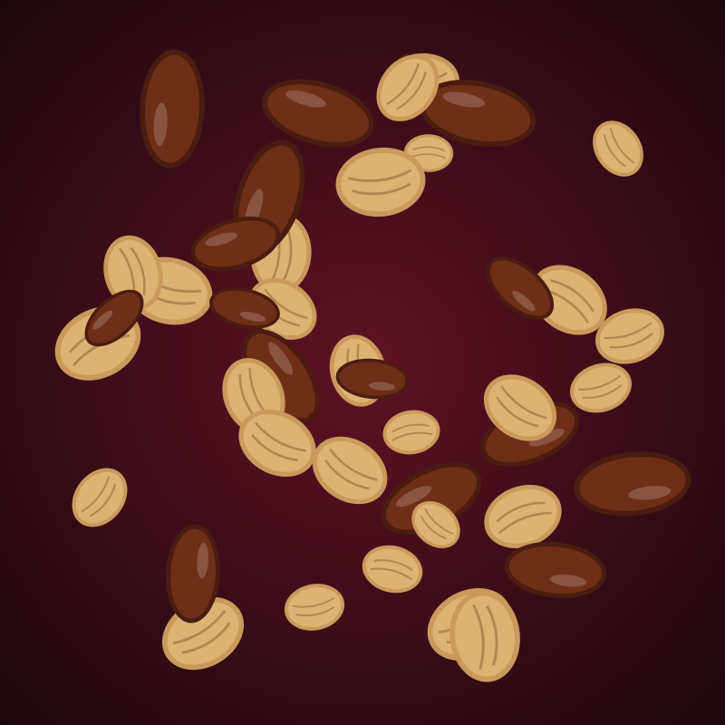

Old recipes, poured properly.
Sarauta began in 2019 in a family kitchen in Kaduna with one blender, a sack of hibiscus and a stubborn idea: Nigerian drinks deserve to be treated as something precious.

Where the name comes from
Sarauta is the Hausa word for chieftaincy: the office, the honour and the duty that come with a title. We chose it because the drinks we grew up with were always served to guests first, in the best glass in the house. We wanted to bring that respect to every bottle.
Founder Hauwa Lawal trained as a food technologist and spent years watching good local fruit go to waste for want of proper cold storage. Sarauta is her answer: press it fresh, bottle it carefully and give it the presentation it has always deserved.
Explore the collectionWhat we stand for
Three habits that decide how every batch is made.
Fruit first
If a fruit needs help to taste good, we do not buy it. Nothing goes into the juice except, sometimes, a second fruit.
Made slowly
Fura is cultured overnight and zobo is steeped for twelve hours. Speed is the enemy of flavour.
Glass, always
Glass keeps the taste clean and can be used again. Hand empty bottles back with your next delivery and we take ₦300 off.
How we got here
Six years, one kitchen that outgrew itself, and a lot of hibiscus.
2019
The first batch: twelve bottles of zobo, sold to neighbours in Kaduna from a cool box.
2021
A small production kitchen opens. Fura joins the range after a year of testing with family recipes.
2023
We move to our own bottle and gold cap, and begin delivering to Abuja.
2025
Weekly delivery reaches Lagos, and the Palace Box becomes our most gifted product.

Where the fruit comes from
We buy close to the source and tell you where it is from.
- HibiscusSmallholders, Kano and Jigawa
- MangoesOrchards around Kaduna
- Oranges and pineappleBenue
- Baobab pulpWild-harvested, northern savanna
- TigernutsKano
- MilletKatsina
Come and taste it.
Visit the tasting room in Kaduna, or ask us to bring a pouring table to your next event.
Get in touch